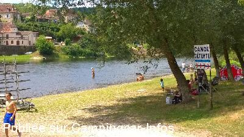

ASN = Aire de services avec stationnement nuit possible de :
SAINT VINCENT DE COSSE
(N° 756)
Accès/adresse :
Ferme de Port d'Enveaux
24220 SAINT VINCENT DE COSSE
24220 SAINT VINCENT DE COSSE
Latitude : (Nord) 44.8267° Décimaux ou 44° 49′ 36′′
Longitude : (Est) 1.09789° Décimaux ou 1° 5′ 52′′
Tarif : Gratuit si achat, consommation ou location de canoë
Type de borne : Artisanale
Services :


Possibilité de repas
Conserves
Produits locaux
Location de canoës
Autres informations :
Ouverte toute l'année
40 emplacements limités 48 h
Tel : +33(0)553 295 215
http://www.ferme-du-portdenveaux.com
Le 11/08/2014 par cricrik57

Le 11/08/2014 par cricrik57
Le 25/08/2013 par Iakito
Le 25/08/2013 par Iakito
Le 25/08/2013 par Iakito
de
KAYSER
le 11/08/2014 :
Aire superbe, avec vidange et plein d'eau, stationnement gratuit durant les premières 24h, après quoi, pour rester plus longtemps consommation au resto, ou balade en canoé, ou encore achat de produits locaux.
Dommage que la propriétaire ne soit pas plus souriante.
Aire superbe, avec vidange et plein d'eau, stationnement gratuit durant les premières 24h, après quoi, pour rester plus longtemps consommation au resto, ou balade en canoé, ou encore achat de produits locaux.
Dommage que la propriétaire ne soit pas plus souriante.
de
Monida
le 03/10/2013 :
Accueil super, au bord de la Dordogne par Manu et Marina. Cuisine maison excellente. En plus vaste aire avec vidange pour les camping-cars. A recommander vivement. Possibilité de se baigner dans la DORDOGNE, attention il y a un fort débit.
Accueil super, au bord de la Dordogne par Manu et Marina. Cuisine maison excellente. En plus vaste aire avec vidange pour les camping-cars. A recommander vivement. Possibilité de se baigner dans la DORDOGNE, attention il y a un fort débit.
de
bernard et annick
le 29/05/2012 :
nous sommes restes 2 nuits tres bon accueil et bons produits.seul petit bemol attaque des moustiques mais le point de vue vaut bien une piqure.merci pour tout
nous sommes restes 2 nuits tres bon accueil et bons produits.seul petit bemol attaque des moustiques mais le point de vue vaut bien une piqure.merci pour tout
de
j . jacques laloup
le 13/10/2011 :
je suis d'accord avec Stéphane 81 et Mathieu de passage plusieurs fois a cet endroit nous avions été très bien accueillis endroit conseilles
je suis d'accord avec Stéphane 81 et Mathieu de passage plusieurs fois a cet endroit nous avions été très bien accueillis endroit conseilles
de
Didier PEZZUTTO
le 13/08/2011 :
Aire très agréable gratuite (achat de produits chez le propriétaire, conserves, canoë ou restaurant demandé) plage, stationnement ombragé.
Aire très agréable gratuite (achat de produits chez le propriétaire, conserves, canoë ou restaurant demandé) plage, stationnement ombragé.
de
Stephane81
le 17/11/2009 :
Je pense que notre ami Francois a dû se tromper. Des CC, il peut en rentrer 50 au moins . A mon avis, toujours une bonne adresse, il n'y a qu'à voir les messages sur cette installation.
Je pense que notre ami Francois a dû se tromper. Des CC, il peut en rentrer 50 au moins . A mon avis, toujours une bonne adresse, il n'y a qu'à voir les messages sur cette installation.
de
mahieu
le 20/07/2009 :
Bonjour à tous. Nous y sommes passés l'année dernière et je pense que je vais y faire escale au mois d'aout car très bien reçu.
Je confirme que la nuit et les services sont gratuits mais bien sûr, il faut consommer leurs produits. De toute façon, vue leur gentillesse on ne peut faire autrement car trop beau le site, et le canoé super §
Bonjour à tous. Nous y sommes passés l'année dernière et je pense que je vais y faire escale au mois d'aout car très bien reçu.
Je confirme que la nuit et les services sont gratuits mais bien sûr, il faut consommer leurs produits. De toute façon, vue leur gentillesse on ne peut faire autrement car trop beau le site, et le canoé super §
de
Cool31
le 15/07/2009 :
Bonjour, nous avons passé une nuit lors du week-end du 14 juillet. Endroit très agréable où une quinzaine de camping car stationnaient. Nous confirmons que les premières 24 h sont gratuites et si plusieurs nuits, consommation à l'auberge ou bien achat de produits de la ferme ou bien ballades en canoë.
Il y a énormément de places sous les noyers. Attention, le bruit des noix tombant sur le camping car est surprenant la nuit!!
Bonjour, nous avons passé une nuit lors du week-end du 14 juillet. Endroit très agréable où une quinzaine de camping car stationnaient. Nous confirmons que les premières 24 h sont gratuites et si plusieurs nuits, consommation à l'auberge ou bien achat de produits de la ferme ou bien ballades en canoë.
Il y a énormément de places sous les noyers. Attention, le bruit des noix tombant sur le camping car est surprenant la nuit!!
de
FEFE
le 16/05/2008 :
De passage, il y a quelques jours , pas de problème avec Jean luc , son épouse ou l'équipe de l'auberge ! Cela reste une très bonne adresse !
Demander la clé pour l'eau àa la boutique de produits régionaux ou à la location de canoës pour les services ! et oui certains n'ont pas joué le jeu ....
Pour l'auberge, pensez à réserver des votre arrivée car sinon vous risquez de ne pas avoir de place...
Un acro-branche est disponible de long de l'eau mais est indépendant de la structure d'accueil des cc. Et surtout il y a de la place il faut donc éviter de se coller les uns aux autres !
De passage, il y a quelques jours , pas de problème avec Jean luc , son épouse ou l'équipe de l'auberge ! Cela reste une très bonne adresse !
Demander la clé pour l'eau àa la boutique de produits régionaux ou à la location de canoës pour les services ! et oui certains n'ont pas joué le jeu ....
Pour l'auberge, pensez à réserver des votre arrivée car sinon vous risquez de ne pas avoir de place...
Un acro-branche est disponible de long de l'eau mais est indépendant de la structure d'accueil des cc. Et surtout il y a de la place il faut donc éviter de se coller les uns aux autres !
de
fefe
le 02/06/2006 :
Nous avons passé deux bonnes soirées et nuits lors du rassemblements cci dans le perigord!Pour avoir discuté avec le proprietaire il est bon de signaler que cette aire est privée et mise à notre disposition gratuitement.
Il offre également des promenades en canoe, une boutique de produits regionaux et la possibilité de se regaler a son auberge! donc aidons le dans cette belle entreprise ..............
Un parcours 'acrobranches' est egalement disponible le long et au-dessus de la riviere
Nous avons passé deux bonnes soirées et nuits lors du rassemblements cci dans le perigord!Pour avoir discuté avec le proprietaire il est bon de signaler que cette aire est privée et mise à notre disposition gratuitement.
Il offre également des promenades en canoe, une boutique de produits regionaux et la possibilité de se regaler a son auberge! donc aidons le dans cette belle entreprise ..............
Un parcours 'acrobranches' est egalement disponible le long et au-dessus de la riviere
de
FEFE
le 02/11/2005 :
Passage pour le 30/10/05.
Endroit très calme en cette saison avec aire facile d'accès.
L'auberge ferme du 01/11/05 au 01/04/06
Bonne adresse pour un bon petit repas digne du Périgord !
Passage pour le 30/10/05.
Endroit très calme en cette saison avec aire facile d'accès.
L'auberge ferme du 01/11/05 au 01/04/06
Bonne adresse pour un bon petit repas digne du Périgord !
de
le 30/06/2005 :
Stayed June 2005. Also a France Passion site. Situated in a Walnut tree orchard next to the Dordogne river. Nice site, also a canoe centre.
Stayed June 2005. Also a France Passion site. Situated in a Walnut tree orchard next to the Dordogne river. Nice site, also a canoe centre.
de
LEMOINE, Alain
le 26/02/2004 :
Nous avons passé une nuit très calme en bordure de la Dordogne. Très bon accueil même en hivers ou le maître des lieux vous propose de vous faire découvrir le gavage de ses canards. Vidange et eau propre à volonté et de plus gratuitement.
Je reconmmande cette aire à tous les Camping-caristes.
Nous avons passé une nuit très calme en bordure de la Dordogne. Très bon accueil même en hivers ou le maître des lieux vous propose de vous faire découvrir le gavage de ses canards. Vidange et eau propre à volonté et de plus gratuitement.
Je reconmmande cette aire à tous les Camping-caristes.
de
le 20/06/2003 :
Stationnement dans l'herbe, bien plat, sous les arbres. Possibilité de manger au restaurant (prod. locaux), de faire du canoë sur la Dordogne, de faire un parcours "aventure" dans les arbres. Bien agréable.
Stationnement dans l'herbe, bien plat, sous les arbres. Possibilité de manger au restaurant (prod. locaux), de faire du canoë sur la Dordogne, de faire un parcours "aventure" dans les arbres. Bien agréable.